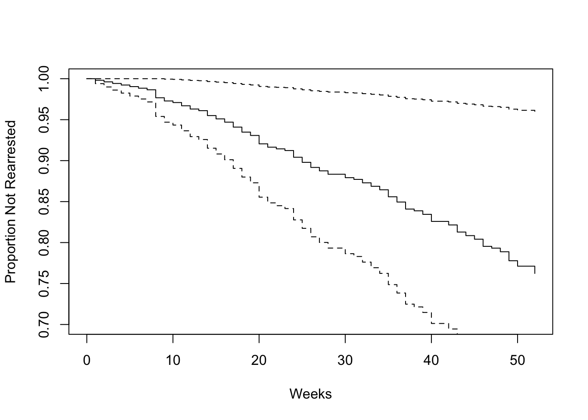
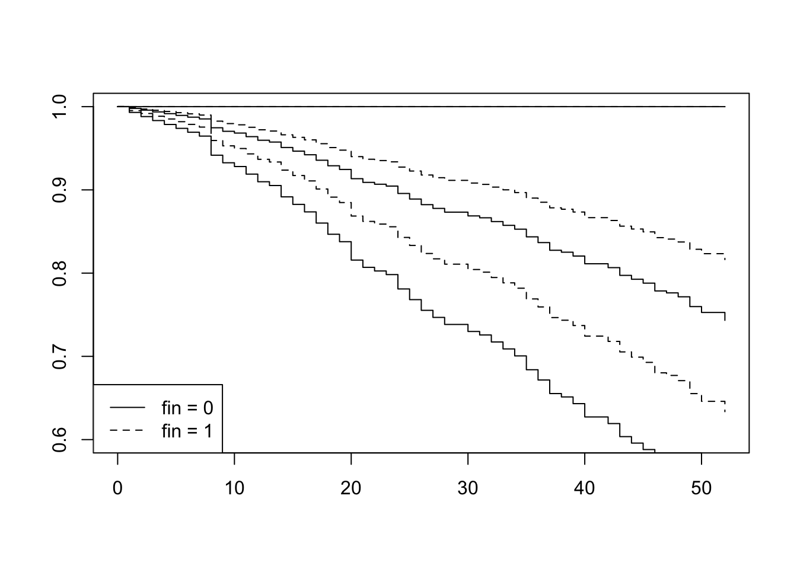
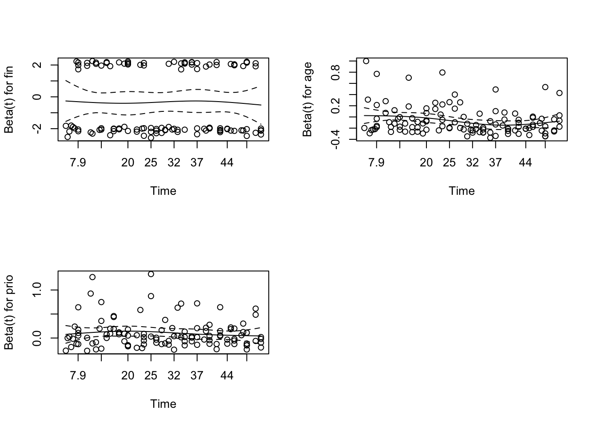

第15章 生存分析
15.1 Concepts
- examines and models the time it takes for events to occur
- the distribution of survival times
- Popular: Cox proportional-hazards regression model
15.2 Notation
- T as a random variable with cumulative distribution function \(P (t) = Pr(T ≤ t)\) and probability density function \(p(t) = \frac{dP (t)}{dt}\)
- survival function S(t) is the complement of the distribution function, \(S(t) = Pr(T > t) = 1 − P (t)\)
- hazard function \(log h(t) = ν + ρt\)
15.3 Cox proportional-hazards regression model
- \(log h_i(t)=α+_1x_{i1} +β_2x_{ik} +···+β_kx_{ik}\)
- Cox model
- \(log h_i(t)=α(t)+β_1x_{i1} +β_2x_{ik} +···+β_kx_{ik}\)
- the Cox model is a proportional-hazards model
- \(\frac{h_i(t)}{h_{i'}(t)} = \frac{e^{\eta_i}}{e^{\eta'}}\)
15.4 Case: Recidivism
- Target: recidivism of 432 male prisoners, who were observed for a year after being released from prison
- arrest means the male prisoners who rearrested
- 52 weeks
- factors: financial aid after release from prison, affected，release ages，race，work experience，marriage，parole，prior convictions, education
library(survival)
library(car)
# perform survival analysis
data("Rossi")
Rossi[1:5, 1:10]## week arrest fin age race wexp mar paro prio educ
## 1 20 1 no 27 black no not married yes 3 3
## 2 17 1 no 18 black no not married yes 8 4
## 3 25 1 no 19 other yes not married yes 13 3
## 4 52 0 yes 23 black yes married yes 1 5
## 5 52 0 no 19 other yes not married yes 3 3mod.allison <- coxph(Surv(week, arrest) ~ fin + age + race + wexp + mar + paro + prio, data=Rossi)
summary(mod.allison)## Call:
## coxph(formula = Surv(week, arrest) ~ fin + age + race + wexp +
## mar + paro + prio, data = Rossi)
##
## n= 432, number of events= 114
##
## coef exp(coef) se(coef) z Pr(>|z|)
## finyes -0.3794 0.6843 0.1914 -1.98 0.0474 *
## age -0.0574 0.9442 0.0220 -2.61 0.0090 **
## raceother -0.3139 0.7306 0.3080 -1.02 0.3081
## wexpyes -0.1498 0.8609 0.2122 -0.71 0.4803
## marnot married 0.4337 1.5430 0.3819 1.14 0.2561
## paroyes -0.0849 0.9186 0.1958 -0.43 0.6646
## prio 0.0915 1.0958 0.0286 3.19 0.0014 **
## ---
## Signif. codes: 0 '***' 0.001 '**' 0.01 '*' 0.05 '.' 0.1 ' ' 1
##
## exp(coef) exp(-coef) lower .95 upper .95
## finyes 0.684 1.461 0.470 0.996
## age 0.944 1.059 0.904 0.986
## raceother 0.731 1.369 0.399 1.336
## wexpyes 0.861 1.162 0.568 1.305
## marnot married 1.543 0.648 0.730 3.261
## paroyes 0.919 1.089 0.626 1.348
## prio 1.096 0.913 1.036 1.159
##
## Concordance= 0.64 (se = 0.027 )
## Likelihood ratio test= 33.3 on 7 df, p=2e-05
## Wald test = 32.1 on 7 df, p=4e-05
## Score (logrank) test = 33.5 on 7 df, p=2e-05# plot time vs survival prob
plot(survfit(mod.allison), ylim=c(.7, 1), xlab='Weeks', ylab='Proportion Not Rearrested')
15.4.1 result
- The covariates age and prio (prior convictions) have highly statistically significant coefficients, while the coefficient for fin (financial aid) is marginally significant
- holding the other covariates constant, an additional year of age reduces the weekly hazard of rearrest by a factor of \(e^b = 0.944\) on average – that is, by 5.6
- likelihood-ratio, Wald, and score chi-square statistics: null hypothesis all of the β’s are zero.
15.5 further
- assess the impact of financial aid on rearrest
- new data frame with two rows, one for each value of fin; the other covariates are fixed to their average values
Rossi.fin <- data.frame(fin=c(0,1), age=rep(mean(Rossi$age),2), race=rep(mean(as.numeric(Rossi$race)),2), wexp=rep(mean(as.numeric(Rossi$wexp)),2), mar=rep(mean(as.numeric(Rossi$mar)),2), paro=rep(mean(as.numeric(Rossi$paro)),2), prio=rep(mean(as.numeric(Rossi$prio)),2))
plot(survfit(mod.allison, newdata=Rossi.fin), conf.int=T, lty=c(1,2), ylim=c(.6, 1))
legend("bottomleft", legend=c('fin = 0', 'fin = 1'), lty=c(1,2))
- the higher estimated ‘survival’ of those receiving financial aid, but the two confidence envelopes overlap substantially, even after 52 weeks
15.6 Time-Dependent Covariates
- treat the employed variable as a tim-dependent covariates with 52 weeks’ record
sum(!is.na(Rossi[,11:62])) # record count## [1] 19809Rossi2 <- matrix(0, 19809, 14) # to hold new data set
colnames(Rossi2) <- c('start', 'stop', 'arresttime', names(Rossi)[1:10], 'employed')
row<-0
for (i in 1:nrow(Rossi)) {
for (j in 11:62) {
if (is.na(Rossi[i, j])) next
else {
row <- row + 1 # increment row counter
start <- j - 11 # start time (previous week)
stop <- start + 1 # stop time (current week)
arresttime <- if (stop == Rossi[i, 1] && Rossi[i, 2] ==1) 1 else 0
Rossi2[row,] <- c(start, stop, arresttime, unlist(Rossi[i, c(1:10, j)]))
}
}
}
Rossi2 <- as.data.frame(Rossi2)
remove(i, j, row, start, stop, arresttime)
modallison2 <- coxph(Surv(start, stop, arresttime) ~ fin + age + race + wexp + mar + paro + prio + employed, data=Rossi2)
summary(modallison2)## Call:
## coxph(formula = Surv(start, stop, arresttime) ~ fin + age + race +
## wexp + mar + paro + prio + employed, data = Rossi2)
##
## n= 19809, number of events= 114
##
## coef exp(coef) se(coef) z Pr(>|z|)
## fin -0.3567 0.7000 0.1911 -1.87 0.0620 .
## age -0.0463 0.9547 0.0217 -2.13 0.0330 *
## race -0.3387 0.7127 0.3096 -1.09 0.2740
## wexp -0.0256 0.9748 0.2114 -0.12 0.9038
## mar 0.2937 1.3414 0.3830 0.77 0.4431
## paro -0.0642 0.9378 0.1947 -0.33 0.7416
## prio 0.0851 1.0889 0.0290 2.94 0.0033 **
## employed -1.3283 0.2649 0.2507 -5.30 1.2e-07 ***
## ---
## Signif. codes: 0 '***' 0.001 '**' 0.01 '*' 0.05 '.' 0.1 ' ' 1
##
## exp(coef) exp(-coef) lower .95 upper .95
## fin 0.700 1.429 0.481 1.018
## age 0.955 1.047 0.915 0.996
## race 0.713 1.403 0.388 1.308
## wexp 0.975 1.026 0.644 1.475
## mar 1.341 0.745 0.633 2.842
## paro 0.938 1.066 0.640 1.374
## prio 1.089 0.918 1.029 1.152
## employed 0.265 3.775 0.162 0.433
##
## Concordance= 0.708 (se = 0.023 )
## Likelihood ratio test= 68.7 on 8 df, p=9e-12
## Wald test = 56.1 on 8 df, p=3e-09
## Score (logrank) test = 64.5 on 8 df, p=6e-1115.7 Model Diagnostics
- Checking Proportional Hazards
modallison3 <- coxph(Surv(week, arrest) ~ fin + age + prio, data=Rossi)
modallison3## Call:
## coxph(formula = Surv(week, arrest) ~ fin + age + prio, data = Rossi)
##
## coef exp(coef) se(coef) z p
## finyes -0.35 0.71 0.19 -2 0.068
## age -0.07 0.94 0.02 -3 0.001
## prio 0.10 1.10 0.03 4 4e-04
##
## Likelihood ratio test=29 on 3 df, p=2e-06
## n= 432, number of events= 114cox.zph(modallison3)## chisq df p
## fin 0.0638 1 0.801
## age 6.3255 1 0.012
## prio 0.5187 1 0.471
## GLOBAL 7.1367 3 0.068par(mfrow=c(2,2))
plot(cox.zph(modallison3))
- there appears to be a trend in the plot for age, with the age effect declining with time
modallison4 <- coxph(Surv(start,stop,arresttime)~fin+age+age:stop:stop+prio, data = Rossi2)
modallison4## Call:
## coxph(formula = Surv(start, stop, arresttime) ~ fin + age + age:stop:stop +
## prio, data = Rossi2)
##
## coef exp(coef) se(coef) z p
## fin -0.349 0.706 0.190 -1.8 0.067
## age 0.032 1.033 0.039 0.8 0.413
## prio 0.098 1.103 0.027 3.6 3e-04
## age:stop -0.004 0.996 0.001 -2.6 0.009
##
## Likelihood ratio test=36 on 4 df, p=3e-07
## n= 19809, number of events= 114the coefficient for the interaction is negative and highly statistically significant: The effect of age declines with time
use residual to find influential observations